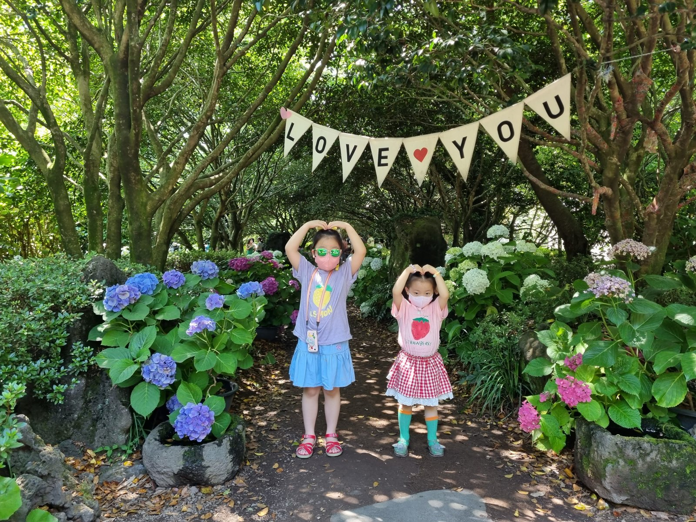

01이번 원본
이동·숙소
공항에서 숙소로, 제주 여행의 시작
- 공항 이동통로
- 탑승·기내
- 숙소
- 가족 휴식
오전 11시대 공항 이동통로와 탑승구, 기내 사진이 이어집니다. 오후 4시대부터는 독채 형태의 숙소 외관과 내부, 아이들의 놀이와 휴식 장면이 남아 있습니다.
근거: 촬영일·사진 장면 · 유효 GPS 없음 · 이번 폴더 사진 76장 / 동영상 0개
확인이 필요한 내용
공항 이름과 항공편, 숙소명·주소는 사진만으로 확정하지 않았습니다.

사진으로 다시 잇는 우리 여행
레이싱과 수국, 아이들과 함께 남긴 제주
사진 기록 · 2022. 6. 1. — 6. 5.기억을 이어 주는 사진들
공항과 기내에서 시작해 숙소의 휴식, 9.81파크의 레이싱, 바다를 바라본 식사와 수국 정원, 어린이 체험 전시까지. 다섯 날의 사진으로 제주 여행의 장면들을 이어 봅니다.
장소와 시간을 연결하다
사진에 유효 GPS가 없어 확인된 공개 장소만 Google 지도에 표시했습니다. 숙소나 이름이 확인되지 않은 장소의 위치는 추정하지 않았습니다.
날짜별로 펼쳐 보는 기억
전체 5개 날짜를 보고 있습니다.
이동·숙소
오전 11시대 공항 이동통로와 탑승구, 기내 사진이 이어집니다. 오후 4시대부터는 독채 형태의 숙소 외관과 내부, 아이들의 놀이와 휴식 장면이 남아 있습니다.
근거: 촬영일·사진 장면 · 유효 GPS 없음 · 이번 폴더 사진 76장 / 동영상 0개
공항 이름과 항공편, 숙소명·주소는 사진만으로 확정하지 않았습니다.
체험
오전에는 9.81파크의 시설과 카트에 앉은 가족, 야외 코스 장면이 이어집니다. 오후에는 돌하르방 앞에서 사진을 찍고 저녁에는 숙소에서 식사하는 장면이 남아 있습니다.
근거: 촬영일·사진 장면 · 유효 GPS 없음 · 이번 폴더 사진 27장 / 동영상 0개
정확한 레이스 상품·기록·완주 횟수나 사진에 없는 이동 코스는 단정하지 않았습니다.
정원·산책
아침 숙소 주변 풍경과 점심 식사 뒤로 바다가 보이는 야외 공간의 가족 사진이 이어집니다. 오후 2시대부터는 수국 꽃길과 숲길, 온실을 거닐며 많은 사진을 남겼고 저녁 식사 장면으로 하루의 기록이 이어집니다.
근거: 촬영일·사진 장면 · 유효 GPS 없음 · 이번 폴더 사진 163장 / 동영상 0개
정원·식당의 이름이 확인되지 않아 특정 관광지나 매장으로 표시하지 않았습니다.
전시·체험
아침 식사 후 야외 그네와 초지 풍경을 남겼습니다. 정오 무렵에는 제주 바다·해녀·물허벅 등의 문화를 소개하는 어린이 전시와 만들기 체험 장면이 이어지고, 저녁 가족 식사 사진이 남아 있습니다.
근거: 촬영일·사진 장면 · 유효 GPS 없음 · 이번 폴더 사진 71장 / 동영상 0개
전시 내용은 사진으로 확인되지만 기관명은 미확인입니다. 오설록이나 다른 박물관으로 임의 지정하지 않았습니다.
이동
오후 1시대 공항에서 기다리는 가족 사진과 오후 3시대 기내 사진이 마지막 기록으로 남아 있습니다. 공항·탑승의 순서는 확인되지만 출발·도착 공항명이나 실제 귀가 시각은 단정하지 않았습니다.
근거: 촬영일·사진 장면 · 유효 GPS 없음 · 이번 폴더 사진 8장 / 동영상 0개
가족 전용 기록 보기 ↗우리가 머문 장소들
전체 6곳
브랜드와 시설, 카트 탑승·야외 레이싱 장면이 함께 확인됩니다.
사진 확인 · GPS 없음꽃길과 나무 그늘, 온실 안 수국 사이에서 가족 사진을 남겼습니다.
장면 확인 · 정원명 미확인식사 뒤 바다를 배경으로 남긴 사진이 있습니다.
장면 확인 · 매장명 미확인그네를 타고 들판에서 시간을 보낸 장면입니다.
장면 확인 · 시설명 미확인바다·해녀·물허벅 전시와 만들기 체험 장면이 남아 있습니다.
전시 내용 확인 · 기관명 미확인독채 숙소와 놀이·휴식 장면을 비공개 앨범에 모았습니다.
사진 확인 · 이름·주소 비공개선별한 대표 장면만 함께 나눕니다
좌표가 유효하지 않아 지도상의 위치나 실제 이동거리를 추정하지 않았습니다. 아래 도식은 날짜별 장면의 순서만 나타냅니다. 촬영일 미확인 14장은 날짜별 코스에서 분리했습니다.
촬영된 장면과 촬영 시각·위치가 함께 맞는 구간을 우선 정리했습니다. 날짜만 있는 사진이나 기존 여행기로 보완한 부분은 별도로 표시했습니다. 사진 없는 시간을 채워 전체 이동을 추정하지 않습니다.
사진은 원촬영 시각과 시간대, 동영상은 원촬영 날짜 정보를 우선했습니다. 공유·내보내기 날짜는 여행 날짜로 사용하지 않았습니다. 기내 GPS는 출발지에 남을 수 있습니다. 가까운 장소는 사진 속 간판·풍경과 함께 확인했고, 교통수단·탑승 완료·정확한 숙소명은 증거가 있을 때만 기록합니다.
사진의 개수는 현재 백업 폴더 기준입니다. 사진 기록일은 전체 여행 기간과 같지 않을 수 있습니다.
공식 안내는 장소 이름과 위치 맥락 확인용이며 가족의 실제 방문은 사진·메타데이터 또는 명시한 기존 여행기 근거로 판단했습니다.